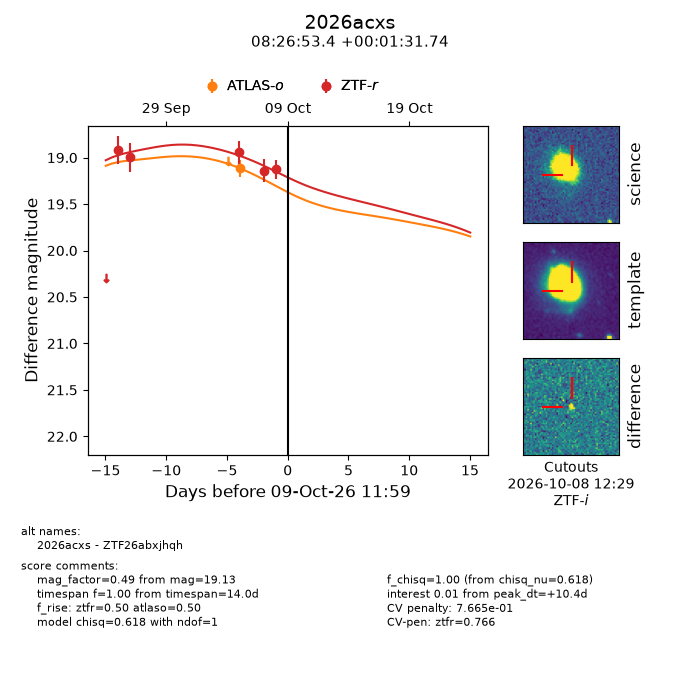
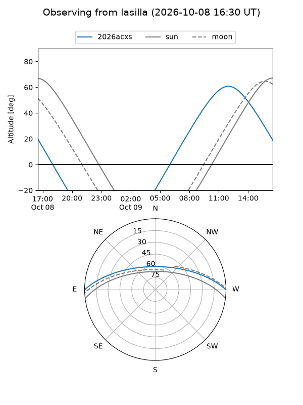
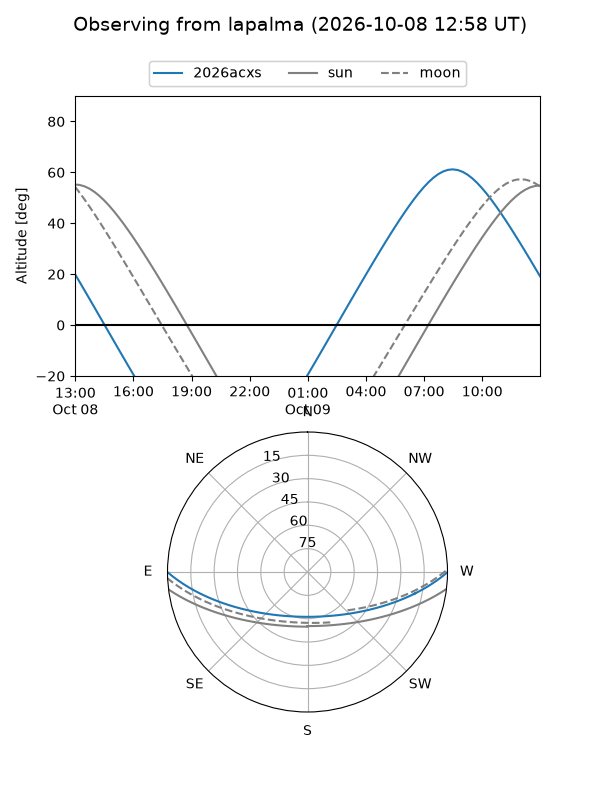
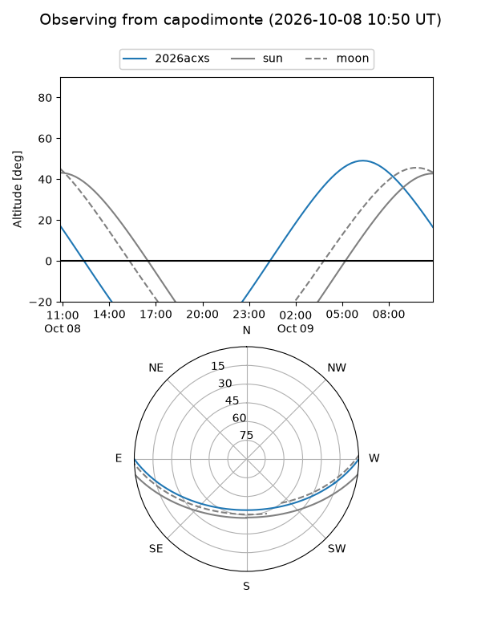
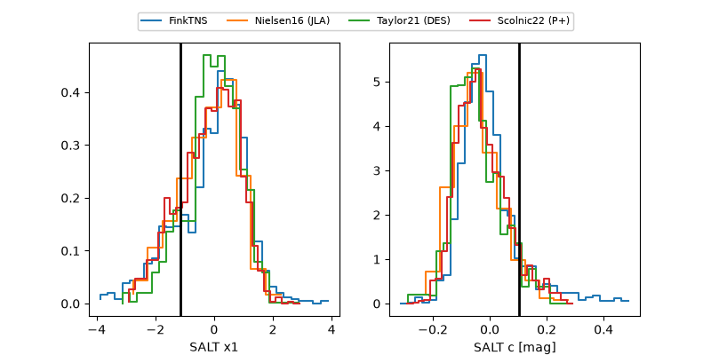

2026acxs
Target 2026acxs at 2026-10-09 12:01
Aliases and brokers:
FINK-ZTF: ztf.fink-portal.org/ZTF26abxjhqh
Lasair-ZTF: lasair-ztf.lsst.ac.uk/objects/ZTF26abxjhqh
ALeRCE-ZTF: alerce.online/object/ZTF26abxjhqh
YSE-PZ: ziggy.ucolick.org/yse/transient_detail/2026acxs
TNS name: wis-tns.org/object/2026acxs
Direct TNS query: direct search
alt names
ZTF26abxjhqh (ztf,fink_ztf)
2026acxs (tns,yse)
Coordinates:
equatorial (ra, dec) = 126.7226,+0.02548
equatorial (HMS+DMS) = 08:26:53.43,+00:01:31.74
galactic (l, b) = (224.3124,+21.11558)
Flags:
peak dt: +10.4
likely cv: !!
Photometry:
last atlaso=19.12, ztfr=19.13
1 atlaso, 5 ztfr detections
Lightcurve

Visibility



Additional plots
